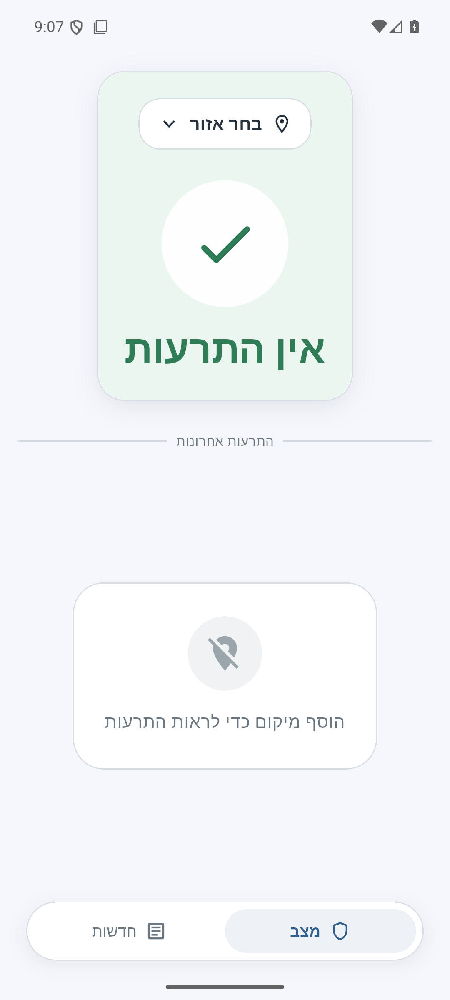
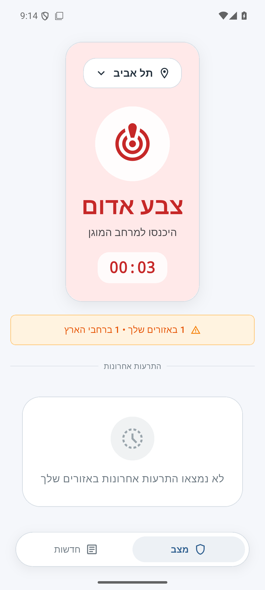
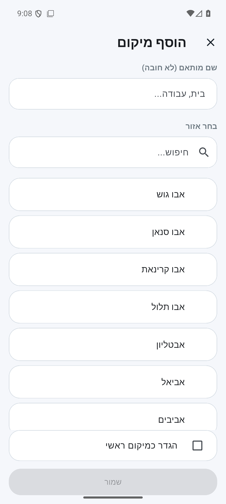
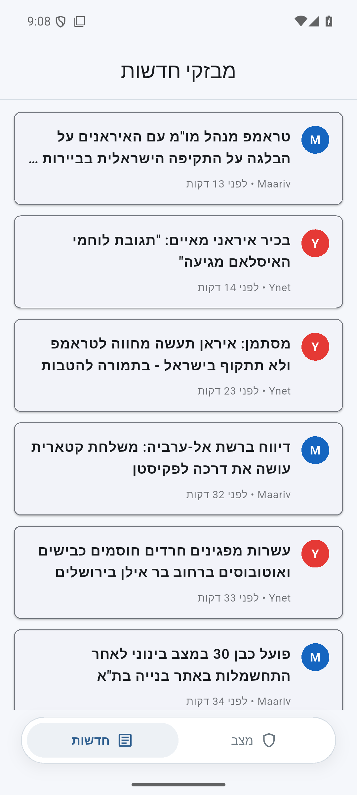

מצב אזור ראשי
כרטיס מצב ברור לאזור שבחרת, כולל מצב שגרה, התרעה פעילה, המתנה לאישור יציאה ושגיאות טעינה.
mklat.news עוזרת לעקוב אחרי מצב התרעות באזור הראשי שלך, אזורים נוספים, היסטוריית התרעות ומבזקי חדשות ממקורות ישראליים — במסך אחד רגוע וברור.


המטרה היא לא להחליף מקורות רשמיים, אלא לתת תמונת מצב מסודרת אחרי שקיבלת התרעה רשמית.
כרטיס מצב ברור לאזור שבחרת, כולל מצב שגרה, התרעה פעילה, המתנה לאישור יציאה ושגיאות טעינה.
מעקב אחרי אזורים שמורים נוספים וסיכום התרעות פעילות ברחבי הארץ.
עדכוני RSS מ־Ynet, Maariv ו־Haaretz כדי להבין את ההקשר החדשותי סביב האירוע.


mklat-news.בדרך כלל מתקינים APK חדש מעל הקיים. אם Android מסרב לעדכן בגלל חתימה לא תואמת, הסירו פעם אחת את הגרסה הישנה והתקינו את הגרסה החדשה. החל מ־1.1.2 גרסאות GitHub חתומות במפתח יציב.